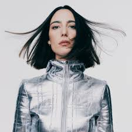
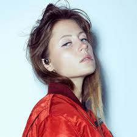
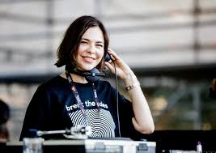
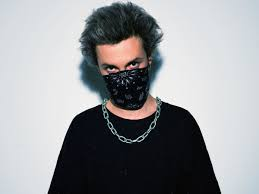

Amelie Lens
Productora belga con un estilo potente y energético.

Charlotte de Witte
Una de las DJs más influyentes del techno actual.

Nina Kraviz
Una artista versátil que mezcla techno, acid y house.
Nico Moreno
Uno de los DJs más destacados de la escena hard techno contemporánea.
Deborah de Luca
Originaria de Nápoles, fusiona sonidos techno con melodías melancólicas y un estilo elegante.

I Hate Models
I Hate Models mezcla techno, EBM y sonidos trance para crear sesiones que impactan tanto en cuerpo como en alma.